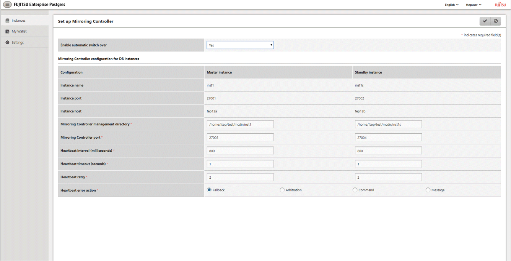
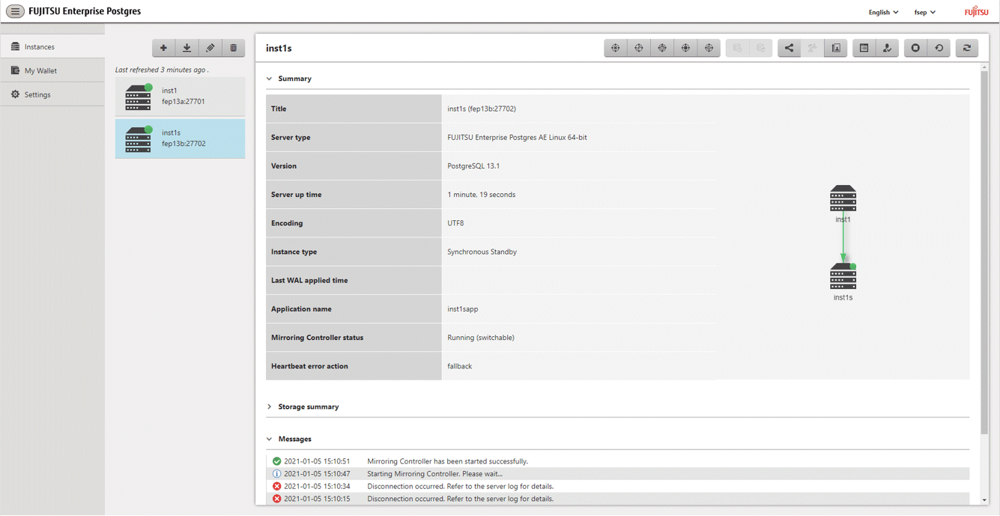

Perform the following procedure to set up Mirroring Controller in a streaming replication cluster.
In the [Instances] tab, select the standby instance on which Mirroring Controller needs to be set up.
Click .
Enter the information for the Mirroring Controller to be set up.
In the example below, Mirroring Controller is being set up for the replication cluster having master instance "inst1" and standby instance "inst1s".

The instance name, host address and port of the master and standby instances are displayed for easy reference.
Enter the following items on master instance and on standby instance fields for Mirroring Controller setup, as shown in the above screenshot:
[Enable automatic switch over]: Toggles the automatic switch/disconnection functionality. Select "Yes". The default is "No".
[Mirroring Controller management directory]: Directory where the Mirroring Controller configuration files will be stored. When the [Mirroring Controller management directory] is entered, WebAdmin will search the Mirroring Controller configuration files in the entered directory based on the [Data storage path] of the corresponding DB instance. If Mirroring Controller configuration files are found, the Mirroring Controller fields will be auto filled.
[Mirroring Controller port]: Port number of Mirroring Controller. Note that if the Windows firewall feature is enabled, you must enable the port number of Mirroring Controller. Refer to "E.2 Windows Firewall Settings" for details.
[Heartbeat interval (milliseconds)]: Number of milliseconds between two consecutive heartbeat checks. The default is "800".
[Heartbeat timeout (seconds)]: Number of seconds for the heartbeat timeout. The default is "1".
[Heartbeat retry]: Number of retries for heartbeat monitoring, before failover occurs. The default is "2".
[Heartbeat error action]: Operation when a heartbeat abnormality is detected. The default is "Fallback".
When using FUJITSU Enterprise Postgres 10, 11 and 12 instances created with previous versions, the instances will be in compatibility mode, and the "Fallback" is preselected and cannot be changed in the [Heartbeat error action] for Mirroring Controller setup.
When setting up Mirroring Controller for FUJITSU Enterprise Postgres 9.5 and 9.6 instances, the [Heartbeat error action] is not supported and therefore is not displayed.
When the [Heartbeat error action] is set to "Arbitration", the following extra items are displayed:
[Arbitration network IP address]: IP address of the arbitration network.
[Mirroring Controller Arbitration port]: Port number of Mirroring Controller for communicating with the arbitration server.
The [Arbitration server configuration] section is also displayed with the following items. The [Arbitration server configuration] will not be auto filled.
[Location]: Location of the arbitration server. "Local" or "Remote" can be selected depending on your configuration.
If the arbitration server and WebAdmin server are located on the same server, you can select "Local" and the following items are displayed:
[Arbitration management directory]: Directory where the arbitration server configuration files will be stored.
[Arbitration server host or IP address]: Host name or IP address of the arbitration server.
[Arbitration process port]: Port number for the arbitration process.
[Fencing command]: Full path of the fencing command that fences a database server when an abnormality is detected.
If "Remote" is set for the item, the items below are displayed in addition to the above items.
In the [Arbitration server configuration] section, [Operating system credential] is displayed where you can enter the following information:
[User name]: User name to access the arbitration server.
[Password]: Password to access the arbitration server.
In the [Remote WebAdmin for Arbitration server] section, the following items are displayed:
[Remote WebAdmin address]: IP address of the remote WebAdmin installed on the arbitration server.
[Remote WebAdmin port]: Port number for the WebAdmin installed on the arbitration server.
When the [Heartbeat error action] is set to "Command", the following extra items are displayed:
[Arbitration command]: Full path of the arbitration command to be executed when an abnormality is detected.
[Fencing command]: Full path of the fencing command that fences a database server when an abnormality is detected.
Click  to set up Mirroring Controller.
to set up Mirroring Controller.
Upon successful completion, Mirroring Controller will be started on master and standby instances.
In the [Instances] tab, select standby instance. The page below is displayed, in which you can check the Mirroring Controller status. In the example below, standby instance "inst1s" is used.

After the Mirroring Controller has been set up,  ([Edit Mirroring Controller] button) and ([Mirroring Controller Configuration] button) are available. These buttons are displayed only when FUJITSU Enterprise Postgres 10 or later instances are created with FUJITSU Enterprise Postgres WebAdmin 13.
([Edit Mirroring Controller] button) and ([Mirroring Controller Configuration] button) are available. These buttons are displayed only when FUJITSU Enterprise Postgres 10 or later instances are created with FUJITSU Enterprise Postgres WebAdmin 13.
For FUJITSU Enterprise Postgres 9.5 and 9.6 instances, the [Heartbeat error action] will not be displayed.
When the [Heartbeat error action] is "Arbitration", the following information is displayed: whether the arbitration status is "online" or "offline", the arbitration server IP address and the arbitration process port.
Note
Operating system credential (User name, Password) should not contain hazardous characters. Refer to "Appendix F WebAdmin Disallow User Inputs Containing Hazardous Characters".